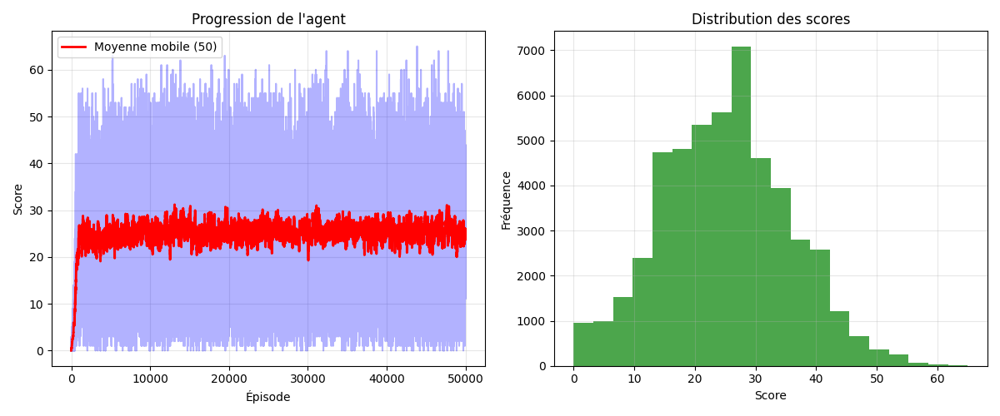

Snake IA
Apprentissage par renforcement · Q-Learning tabulaire
Un agent qui ne sait rien au départ apprend à jouer à Snake. Aucune règle codée à la main : il observe l'état (11 features booléens), choisit parmi 3 actions, reçoit une récompense, et met à jour sa Q-table via Bellman. Après 50 000 épisodes, meilleur score 65 et moyenne stable autour de 24 pommes mangées.
Pourquoi le renforcement ?
Snake est un cas d'école pour le RL : règles simples, espace d'états gérable, feedback immédiat (manger une pomme, mourir contre un mur). Pas besoin d'un dataset labelisé — l'agent génère ses propres données en jouant.
L'objectif n'est pas de coder un Snake qui gagne, mais de coder un agent qui apprend tout seul à gagner. Nuance fondamentale.
Encoding d'état (11 features)
Plutôt que de donner la grille brute (trop d'états), je résume l'observation en 11 booléens. Ça permet une Q-table compacte et un apprentissage rapide.
- 01danger droit devant
- 02danger à droite
- 03danger à gauche
- 04direction actuelle = gauche
- 05direction actuelle = droite
- 06direction actuelle = haut
- 07direction actuelle = bas
- 08pomme à gauche de la tête
- 09pomme à droite de la tête
- 10pomme au-dessus de la tête
- 11pomme en-dessous de la tête
Espace d'états total = 2¹¹ = 2048 combinaisons. La Q-table fait donc 2048 × 3 actions = 6144 valeurs à apprendre. Largement gérable.
# snake_env.py — méthode get_state()
def get_state(self):
head = self.snake[0]
point_l = (head[0] - 1, head[1])
point_r = (head[0] + 1, head[1])
point_u = (head[0], head[1] - 1)
point_d = (head[0], head[1] + 1)
dir_l = self.direction == (-1, 0)
dir_r = self.direction == (1, 0)
dir_u = self.direction == (0, -1)
dir_d = self.direction == (0, 1)
state = [
# danger devant / droite / gauche
(dir_r and self._is_collision(point_r)) or
(dir_l and self._is_collision(point_l)) or
(dir_u and self._is_collision(point_u)) or
(dir_d and self._is_collision(point_d)),
(dir_u and self._is_collision(point_r)) or
(dir_d and self._is_collision(point_l)) or
(dir_l and self._is_collision(point_u)) or
(dir_r and self._is_collision(point_d)),
(dir_d and self._is_collision(point_r)) or
(dir_u and self._is_collision(point_l)) or
(dir_r and self._is_collision(point_u)) or
(dir_l and self._is_collision(point_d)),
# direction actuelle
dir_l, dir_r, dir_u, dir_d,
# position de la pomme relative à la tête
self.food[0] < head[0],
self.food[0] > head[0],
self.food[1] < head[1],
self.food[1] > head[1],
]
return tuple([int(x) for x in state])
Ce que l'agent décide, ce qu'il reçoit en retour
3 actions possibles
[1, 0, 0]— tout droit[0, 1, 0]— tourner à droite[0, 0, 1]— tourner à gauche
Pas de "demi-tour" — ça mènerait directement à une collision avec son propre corps.
Récompenses
- +10 — manger une pomme
- -10 — mourir (mur ou corps)
- +1 — se rapprocher de la pomme
- -1 — s'éloigner de la pomme
La récompense de distance (±1) accélère l'apprentissage : l'agent reçoit un signal à chaque pas, pas seulement à la fin de l'épisode.
Q-Learning, l'équation au cœur de l'agent
À chaque pas, on met à jour la valeur Q(s,a) — l'estimation de la "qualité" de prendre l'action a dans l'état s — avec la règle de Bellman :
- α — taux d'apprentissage (combien on croit la nouvelle info)
- γ — facteur de discount (combien on valorise les récompenses futures)
- r — récompense reçue après l'action
- s' — nouvel état après l'action
La sélection d'action suit une politique epsilon-greedy : avec probabilité ε on explore au hasard, sinon on exploite la meilleure action connue. ε décroît à chaque épisode pour passer d'un agent qui tâtonne à un agent qui sait.
# train_agent.py — méthode learn() (mise à jour Bellman)
def learn(self, state, action, reward, next_state, done):
if state not in self.q_table:
self.q_table[state] = [0, 0, 0]
if next_state not in self.q_table:
self.q_table[next_state] = [0, 0, 0]
old_value = self.q_table[state][action]
next_max = max(self.q_table[next_state]) if not done else 0
new_value = old_value + self.lr * (reward + self.gamma * next_max - old_value)
self.q_table[state][action] = new_value
# boucle d'entraînement principale (extrait de train())
for episode in range(50000):
state = env.reset()
steps = 0
while steps < 1000:
action = agent.get_action(state)
next_state, reward, done = env.step(action)
agent.learn(state, action, reward, next_state, done)
state = next_state
steps += 1
if done: break
scores.append(env.score)
agent.decay_epsilon()
Réglages qui marchent
Trouvés en testant — pas d'optimisation Bayésienne, juste de l'intuition et des courbes regardées sur Matplotlib.
Ce que ça donne après 50 000 épisodes

L'agent décolle vite : dès les premiers milliers d'épisodes, la moyenne mobile (rouge) grimpe au-dessus de 20. Elle plafonne ensuite autour de 24-26 — la limite de ce qu'une Q-table tabulaire peut extraire d'un état aussi compact. Le meilleur run atteint un score de 65. Insight intéressant : seulement 256 états explorés sur les 211 = 2048 théoriques, parce qu'un seul bit de direction peut être actif à la fois — ce qui réduit drastiquement les combinaisons valides et explique la convergence rapide.
L'agent en action
Ce qui m'a marqué
- L'encoding d'état change tout. Passer de "grille brute" à "11 booléens" divise par mille le temps de convergence.
- Le decay d'epsilon doit être pensé selon le nombre d'épisodes. Trop rapide → l'agent fige une stratégie médiocre. Trop lent → il continue à explorer alors qu'il sait déjà jouer.
- Une récompense clairsemée (−10 / +10 / 0) marche mieux qu'une récompense dense "distance à la pomme". Le shaping naïf fait sur-optimiser le mauvais signal.
- Q-learning tabulaire suffit ici grâce au petit espace d'états. Pour un Snake sur grille 50×50 avec obstacles, il faudrait passer à un Deep Q-Network — prochaine étape du projet.